Transducers¶
Every transducer in PyField is built from rectangular patches. The patch geometry is stored in three arrays:
| Attribute | Shape | Description |
|---|---|---|
sub_quad_verts |
list[(4,3)] |
Four corner vertices per patch (metres) |
sub_area |
list[float] |
Area of each patch (m²) |
sub_el_idx |
list[int] |
Element index of each patch |
These are lazy properties — computed on first access and cached.
Array transducers¶
LinearArrayTransducer¶
1-D row of rectangular elements along the x-axis. Supports an optional cylindrical elevation lens.
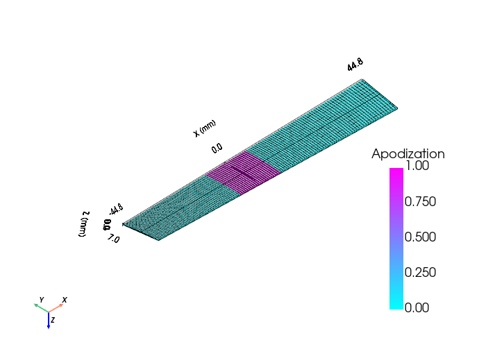
from pyfield.transducers import LinearArrayTransducer
tx = LinearArrayTransducer(
n_elements=64,
element_width_mm=0.25, # element pitch dimension (azimuth)
element_height_mm=12.0, # element height (elevation)
kerf_mm=0.05, # gap between elements
no_sub_x=2, # patches per element along azimuth
no_sub_y=4, # patches per element along elevation
frequency_Hz=5e6,
elevation_focus_mm=None, # None = flat; float = cylindrical lens radius
)
tx.compute_delays(focus_mm=[0, 0, 40])
tx.compute_apodization(focus_mm=[0, 0, 40], FoverD=2.0, apodization_type="hanning")
ConvexArrayTransducer¶
Elements arranged on a convex cylindrical arc in the XZ plane — the standard
geometry for abdominal, cardiac, and obstetric probes. Supports an optional
elevation focus (acoustic lens), equivalent to FIELD II xdc_focused_convex.
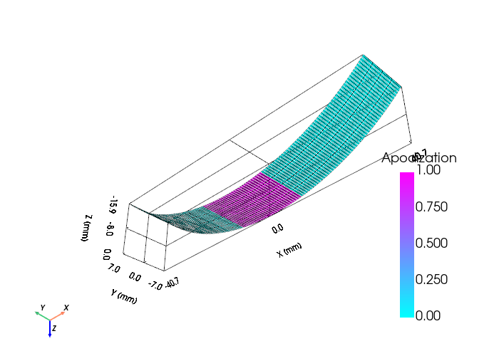
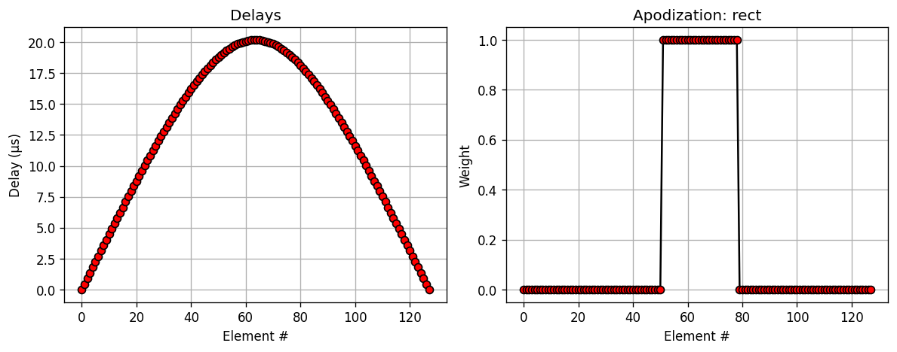
from pyfield.transducers import ConvexArrayTransducer
# Plain convex probe
tx = ConvexArrayTransducer(
n_elements=128,
element_width_mm=0.5,
element_height_mm=10.0,
kerf_mm=0.1,
radius_of_curvature_mm=60.0, # convex arc radius (larger = flatter)
no_sub_x=2,
no_sub_y=4,
frequency_Hz=3.5e6,
)
# Focused convex probe (with elevation lens)
tx_focused = ConvexArrayTransducer(
n_elements=128,
element_width_mm=0.5,
element_height_mm=10.0,
kerf_mm=0.1,
radius_of_curvature_mm=60.0,
no_sub_x=2,
no_sub_y=4,
elevation_focus_mm=60.0, # geometric line focus in elevation at 60 mm
frequency_Hz=3.5e6,
)
tx.compute_delays(focus_mm=[0, 0, 60])
tx.compute_apodization(focus_mm=[0, 0, 60], FoverD=1.5)
MatrixArrayTransducer¶
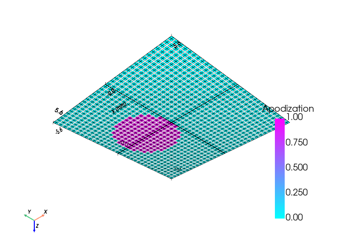
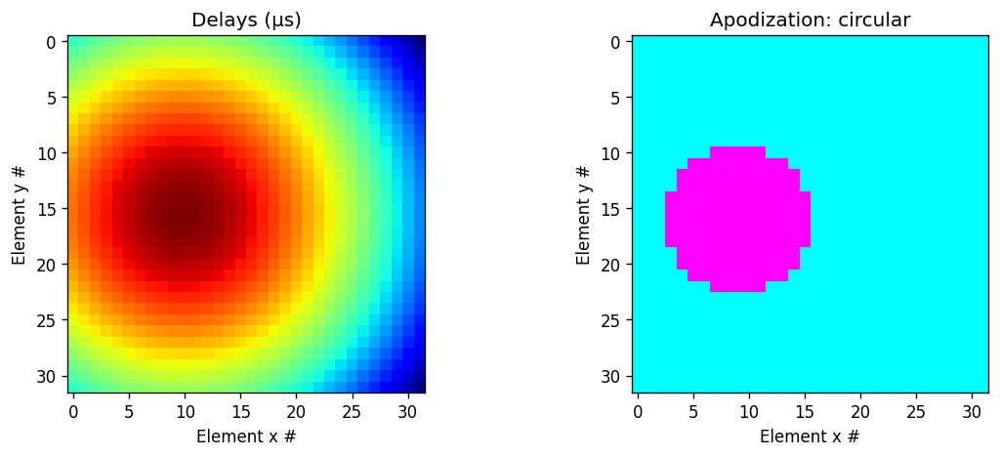
2-D grid of rectangular elements. Independent kerf in x and y. Both
element_width_mm and element_height_mm accept either a scalar (uniform
elements) or a 1-D array (per-column or per-row size variation).
from pyfield.transducers import MatrixArrayTransducer
# Uniform elements
tx = MatrixArrayTransducer(
n_elements_x=16,
n_elements_y=16,
element_width_mm=0.3,
element_height_mm=0.3,
kerf_x_mm=0.05,
kerf_y_mm=0.05,
no_sub_x=2,
no_sub_y=2,
frequency_Hz=3e6,
)
# Non-uniform column widths
import numpy as np
tx_var = MatrixArrayTransducer(
n_elements_x=16,
n_elements_y=16,
element_width_mm=np.linspace(0.25, 0.35, 16), # wider toward edges
element_height_mm=0.3,
kerf_x_mm=0.05,
kerf_y_mm=0.05,
no_sub_x=2,
no_sub_y=2,
frequency_Hz=3e6,
)
tx.compute_delays(focus_mm=[0, 0, 30])
tx.compute_apodization(focus_mm=[0, 0, 30], FoverD=1.5)
Mono-element transducers¶
These transducers have n_elements = 1. compute_delays always returns
[0.0]; focusing is purely geometric (curved surface) or achieved through the
excitation pulse.
FlatCircularTransducer — flat piston¶
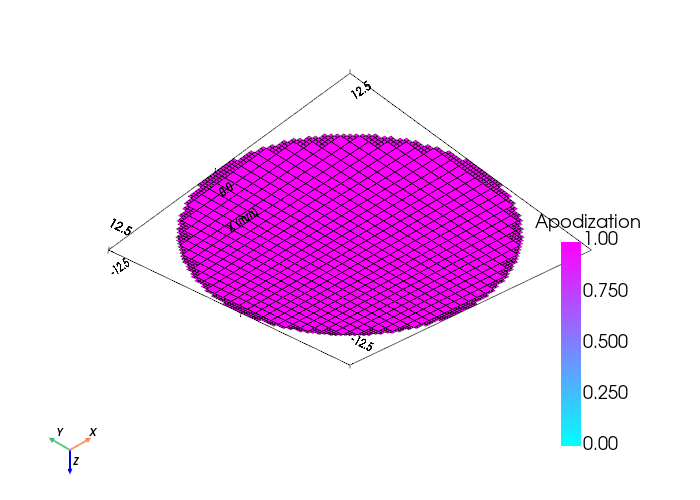
from pyfield.transducers import FlatCircularTransducer
tx = FlatCircularTransducer(
diameter_mm=25.0,
no_sub=30, # patches across diameter
frequency_Hz=1e6,
)
The circular aperture is approximated by keeping only patches whose centre
falls within the disc. Increasing no_sub improves accuracy near the face.
ConvexCircularTransducer — spherical dome¶
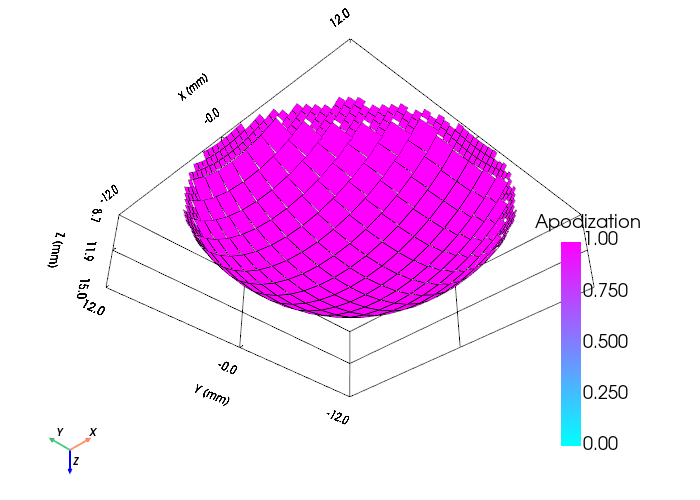
from pyfield.transducers import ConvexCircularTransducer
tx = ConvexCircularTransducer(
diameter_mm=30.0,
radius_of_curvature_mm=25.0,
no_sub=30,
frequency_Hz=1.5e6,
)
The dome surface is defined by z(x,y) = sag − (R − √(R² − x² − y²)),
placing the apex at z = sag and the rim at z = 0. The virtual focus is
behind the transducer at z = −R.
ConcaveCircularTransducer — spherical bowl (TUS / HIFU)¶
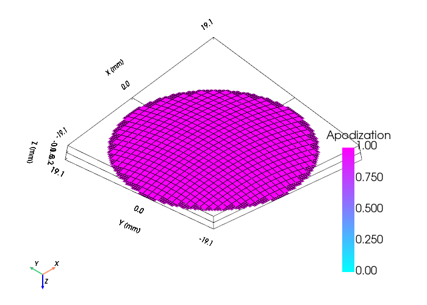
from pyfield.transducers import ConcaveCircularTransducer
tx = ConcaveCircularTransducer(
diameter_mm=40.0,
radius_of_curvature_mm=60.0, # geometric focus at 60 mm depth
no_sub=30,
frequency_Hz=0.5e6,
)
The curved surface is defined by z(x,y) = R - sqrt(R² - x² - y²), so every
patch is equidistant from the focus at (0, 0, R).
FocusedCircularTransducer — line focus (cylindrical)¶
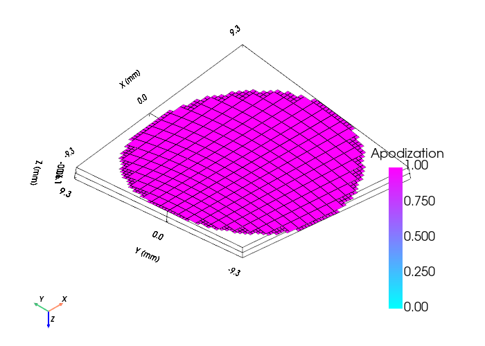
Circular disk aperture curved in one axis only. Produces a line focus instead of a point focus. Useful for 2-D cross-sectional imaging or line-focused therapeutic ultrasound.
from pyfield.transducers import FocusedCircularTransducer
tx = FocusedCircularTransducer(
diameter_mm=20.0,
radius_of_curvature_mm=40.0,
no_sub=20,
focus_axis="y", # "x" or "y" — axis along which the aperture is curved
frequency_Hz=2e6,
)
The curvature follows z(val) = R - sqrt(R² - val²) where val is the x-
or y-coordinate of each patch corner. The centre is at z = 0; outer edges
are lifted toward z > 0.
Composite arrays¶
CustomTransducer — arbitrary multi-element arrays¶
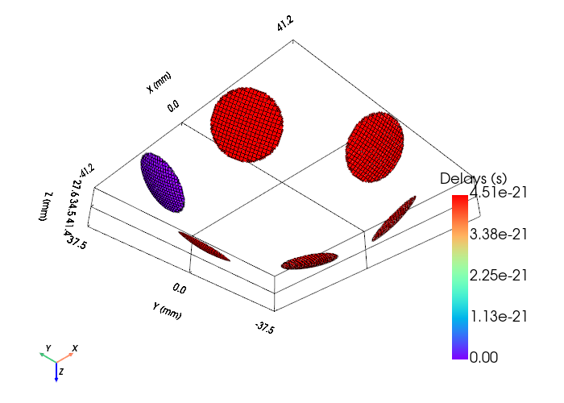
Assemble any number of mono-element transducers at arbitrary positions and orientations. Useful for TUS helmets, ring arrays, or any non-rectangular layout.
import numpy as np
from pyfield.transducers import ConcaveCircularTransducer, CustomTransducer
# Prototype element
elem = ConcaveCircularTransducer(diameter_mm=20, radius_of_curvature_mm=40,
no_sub=20, frequency_Hz=0.5e6)
# 8 elements on a hemisphere, all aimed at the origin
R = 60.0 # mm
phi = np.linspace(0, 2*np.pi, 8, endpoint=False)
theta = np.deg2rad(40)
positions_mm = R * np.column_stack([
np.sin(theta)*np.cos(phi),
np.sin(theta)*np.sin(phi),
np.cos(theta)*np.ones(8),
])
normals = -positions_mm / np.linalg.norm(positions_mm, axis=1, keepdims=True)
helmet = CustomTransducer(
elements=[elem] * 8,
positions_mm=positions_mm,
normals=normals,
)
helmet.compute_delays(focus_mm=[0, 0, 0])
Pre-defined transducers¶
| Name | Description |
|---|---|
Domino |
128-element clinical linear array |
Zeus_Matrix |
55×55 matrix research array |
Common API¶
All transducers share the following methods:
| Method | Description |
|---|---|
compute_delays(focus_mm) |
Distance-based transmit delays (seconds) |
compute_apodization(focus_mm, FoverD) |
F/D aperture selection + windowing |
set_delays(delays) |
Override delays manually |
set_apodization(weights) |
Override apodization manually |
get_mesh() |
Build PyVista PolyData with Delays/Apodization data |
show(scalars) |
Quick interactive visualisation |
plot_delays_apodization() |
Matplotlib 1-D or 2-D summary |
clean() |
Free cached geometry |
get_state_dict() / set_state_dict() |
Serialise / restore |
Factory function¶
from pyfield.transducers import create_transducer
tx = create_transducer("flat_circular", diameter_mm=25.0, no_sub=30, frequency_Hz=1e6)
Available kind strings: "linear", "convex", "matrix", "flat_circular",
"concave_circular", "focused_circular".
Far-field condition¶
Each transducer prints the far-field limit at init:
If this condition is violated the SIR approximation loses accuracy. Decrease
no_sub_x / no_sub_y or increase the field distance.
Special utilities¶
Curved surface patch subdivision¶
The SIR method requires every patch to be a flat rectangle. On a
curved transducer surface, placing flat rectangles so they neither overlap nor
leave large gaps is non-trivial, especially when the surface curves sharply
near the rim. PyField handles this automatically via
pyfield.utilities.surface_subdivision.subdivide_parametric_surface.
How it works¶
Each patch is built in the local tangent plane at the patch centre:
centre = surface_fn(uc, vc) ← point on the curved surface
tu, tv = orthonormal tangent frame ← estimated by finite differences + Gram-Schmidt
corners = centre ± wu/2·tu ± wv/2·tv ← flat rectangle by construction
No analytic derivatives are needed — the frame vectors are computed from the surface function itself, so the same algorithm works for any smooth surface.
Two-mode curvature strategy¶
A naïve uniform grid in parameter space causes patches to become oversized
near the rim of a spherical cap, where the arc-length amplification
||∂r/∂u|| can be much greater than 1. PyField automatically selects
between two strategies based on the measured worst-case amplification:
| Mode | Condition | Grid | Patch size |
|---|---|---|---|
| Low curvature | max ‖∂r/∂u‖ ≤ 1.1 |
Uniform Cartesian | Full arc-length wu = ‖∂r/∂u‖ × Δu — near-perfect tiling |
| High curvature | max ‖∂r/∂u‖ > 1.1 |
Arc-length adapted | Fixed patch_fill × Δu_nominal — uniform gap, no overlap |
In high-curvature mode the grid is resampled so that patch centres are
uniformly spaced in arc-length on the surface, regardless of local
curvature. This prevents the rim from being under-sampled. Patches whose
arc-length extent exceeds max_patch_scale × Δu_nominal are rejected
entirely, leaving intentional holes at extreme rims rather than producing
oversized or overlapping patches.
Tuning parameters¶
ConcaveCircularTransducer, ConvexCircularTransducer, and
FocusedCircularTransducer all expose two tunable parameters:
| Parameter | Default | Effect |
|---|---|---|
patch_fill |
0.75 |
Fraction of the arc-length cell spacing filled by each patch. 1.0 → patches exactly touch; 0.75 → 25% gap per edge (coverage ≈ 56%); 0.9 → 10% gap (coverage ≈ 81%). Scales as patch_fill². |
max_patch_scale |
3.0 |
Patches whose local arc-length amplification ‖∂r/∂u‖ exceeds this factor are discarded, leaving intentional holes at extreme rims. Lower → more aggressive rejection; higher → keep more rim patches. |
from pyfield.transducers import ConcaveCircularTransducer
# Tight hemisphere — rim half-angle ≈ 53° → high-curvature mode triggered
tx = ConcaveCircularTransducer(
diameter_mm=60.0,
radius_of_curvature_mm=37.5, # R ≈ D/2 → deep bowl
no_sub=30,
patch_fill=0.9, # 10% gap per edge → coverage ≈ 81%
max_patch_scale=2.5, # reject strongly amplified rim patches sooner
frequency_Hz=0.5e6,
)
At construction PyField prints a coverage summary:
In high-curvature mode coverage scales as patch_fill² — to achieve a target
coverage C, set patch_fill = √C (e.g. 0.90 for ~81 %). A coverage
below ~50 % usually means no_sub should be increased or patch_fill raised.
Using the subdivision function directly¶
subdivide_parametric_surface is public and can be called for any custom
parametric surface — it is not limited to circular transducers.
import numpy as np
from pyfield.utilities.surface_subdivision import subdivide_parametric_surface
# Ellipsoidal cap: z(x, y) = c * sqrt(1 - x²/a² - y²/b²)
a, b, c = 30e-3, 20e-3, 15e-3 # semi-axes in metres
R_ap = 15e-3 # aperture radius (circular mask)
def ellipsoid_cap(x, y):
arg = max(1.0 - (x / a) ** 2 - (y / b) ** 2, 0.0)
return np.array([x, y, c * np.sqrt(arg)])
frames = subdivide_parametric_surface(
ellipsoid_cap,
u_range=(-R_ap, R_ap),
v_range=(-R_ap, R_ap),
n_u=25, n_v=25,
inside_fn=lambda x, y: x ** 2 / a ** 2 + y ** 2 / b ** 2 <= 1.0,
normal_sign=1.0,
patch_fill=0.75,
max_patch_scale=3.0,
)
# frames is a dict with keys:
# 'corners' — list of (4,3) arrays, one per patch (corner vertices in metres)
# 'centers' — (M,3) patch centres on the surface
# 'normals' — (M,3) unit outward normals
# 'tangents_u' — (M,3) first tangent axis
# 'tangents_v' — (M,3) second tangent axis (orthogonal to normal and tu)
# 'wu', 'wv' — (M,) half-widths of each patch (metres)
# 'el_idx' — (M,) element index per patch (all 0 for single-element)
# 'coverage' — fraction of theoretical surface area covered by patches
# 'n_rejected' — number of patches rejected due to max_patch_scale
The returned frames dict is exactly what the circular transducers store
internally in _sub_patch_frames. You can inspect it to verify the tiling,
compute coverage statistics, or visualise individual patch frames before
running a full SIR simulation.
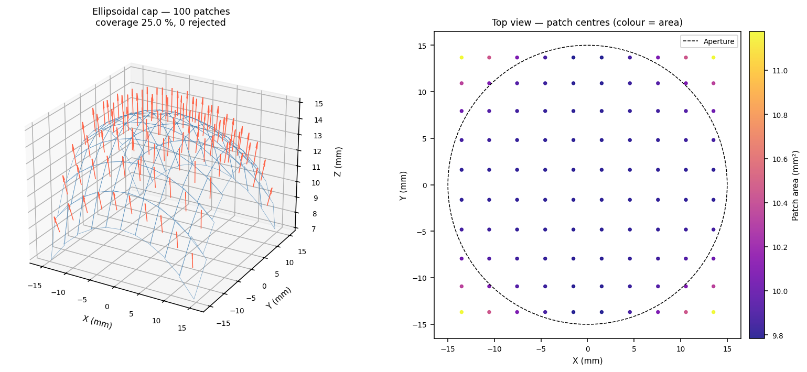
The left panel shows the 3-D patch mosaic with outward normals (red arrows) and flat rectangular patches (blue edges) laid in the local tangent plane at each centre. The right panel is a top-down view of the same subdivision coloured by individual patch area, illustrating that the arc-length adapted grid keeps patch centres equidistant across the aperture — including near the rim — while the circular aperture mask cleanly removes patches outside the boundary.
The figure below overlays the two representations directly in 3-D:
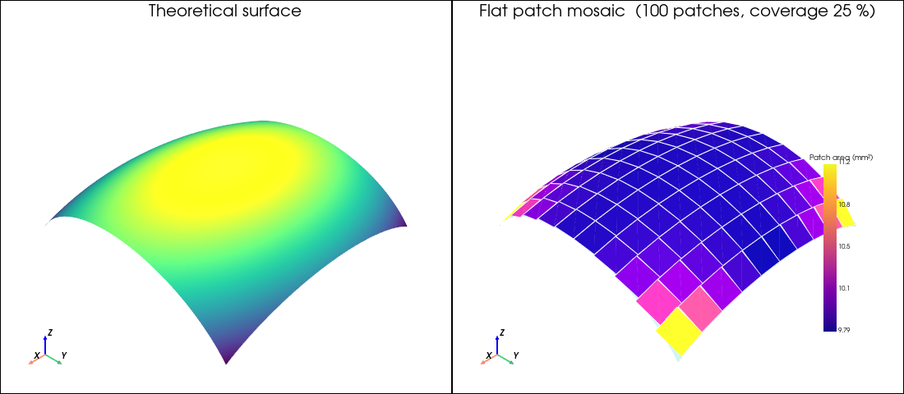
Left — the theoretical ellipsoidal cap surface coloured by height. Right — the flat patch mosaic (coloured by area) with the theoretical surface shown as a semi-transparent overlay (cyan). The mismatch between the flat patches and the curved surface explains why the coverage metric can exceed 100 %: each patch is a rectangle in the local tangent plane, so near the centre (where curvature is low) patches sit almost on the surface and their combined area matches it well, while toward the rim the patches lift slightly above the curved surface and their flat areas sum to more than the actual curved area. The coverage metric therefore reflects how completely the solid angle of the aperture is represented, not physical overlap in 3-D.